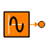

CONTROL.SourceExpSine
COMPONENT SourceExpSine IS_A MO
ICON:

DESCRIPTION:
Generate a sine wave with increasing frequency
CONSTRUCTION PARAMETERS:
| NAME |
TYPE |
DEFAULT |
DESCRIPTION |
UNITS
|
| n_out | INTEGER | 1 | Dimension of outputs | - |
PORTS:
DATA:
| NAME |
TYPE |
DEFAULT |
RANGE |
DESCRIPTION |
UNITS
|
| Amp | REAL | 1 | | Signal amplitude | - |
| Damping | REAL | 1 | | Damping coefficients of sine waves | 1/s |
| Offset | REAL | 0 | | Offset of output signal | - |
| Phase | REAL | 0 | | Signal phase | rad |
| Tstart | REAL | 0 | | Starting time of signal generation | s |
| frec | REAL | 1 / (2 * MATH.PI) | | Signal frecuency | Hz |
FORMULATION:
Document generated automatically (Date: 2019:01:23, Time: 00:18:46)